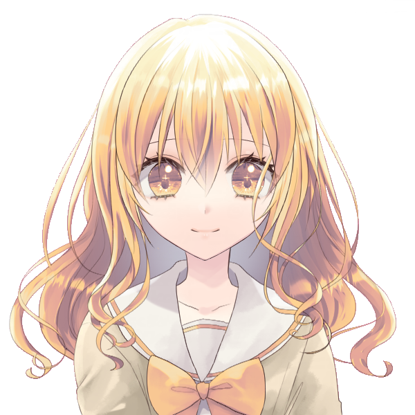

メインログ / 雑談ログ
キャラシート
PC1：遊佐ひまり (キャラシート) PL：めいPC2：ヴォルグ (キャラシート) PL：灸
PC3：天見礼司 (キャラシート) PL：カピバラ
PC4：小鳥居美夜凛 (キャラシート) PL：紫閃
目次
■プリプレイHO&PC紹介
■オープニングフェイズ
01 邂逅
02 不吉な前兆
プリプレイ
HO&PC紹介
GM : それではひまりちゃんから自己紹介お願いします！
遊佐ひまり : はい！
遊佐ひまり : “サイバー・ホーネット”遊佐ひまり。
遊佐ひまり : 料理と家事が得意で、ご飯食べることが大好きな16歳の高校生です！
遊佐ひまり : でもある日FHに拉致されて機械化手術されたせいで、食事が出来ない体になりました。
遊佐ひまり : 親も友人もFHに殺されて何もかもを失ってるけど、今の自分に出来ることをしようと思ってUGNのイリーガルになって、頑張って前向きに生きています。
遊佐ひまり : 能力的にはブラックドッグ/エンジェルハイロゥの射撃型。右腕をガトリング砲に変形させて敵を蜂の巣にします！
遊佐ひまり : 以上で！
遊佐ひまり : https://character-sheets.appspot.com/dx3/edit.html?key=ahVzfmNoYXJhY3Rlci1zaGVldHMtbXByFwsSDUNoYXJhY3RlckRhdGEY572ejQQM
GM : あざます！おのれFH許さん…！応援したくなる子だね…
遊佐ひまり : いっぱい応援してくれ…！
GM : するぜぇ～？そんなひまりちゃんのHOはこちら
■PC1：遊佐ひまり
ロイス：”ブラックバード”黒河コウ（くろかわ・こう）
黒河コウは最近覚醒したと思われるオーヴァードであり、未だにどこの組織にも所属していないと思われる。
あなたはUGNからの監視任務を受け、ターゲットである彼を尾行していた。
しかし彼を追いかけている内に、あなたは様々な不幸に見舞われ追跡は困難を要する。
やっとの思いで彼に追いついたあなたは、そこで”ディアボロス”春日恭二と密会する様子を目撃してしまう…
遊佐ひまり : これもう絶対敵では？（トレーラーの感じも見ながら）
GM : ま、まだわからんよ…💦（8割敵の紹介）
遊佐ひまり : ほんとに～！？じゃああとの二割にかけて信じよう…
GM : うむ…（？）それじゃ次はPC2のヴォルグくん！自己紹介をお願いします！
ヴォルグ : はーい

ヴォルグ : ヴォルグ、情報屋のレネゲイドビーイングです。
ヴォルグ : 気怠そうな表情に2m超えの身長、寒がりで適当な性格の低体温男性です。
ヴォルグ : 日本名・本名はありません、本人が適当に名乗っているロシア語での狼"ヴォルグ"を本名としています。
ヴォルグ :
好きな物は甘い物、手近に甘い物がなければ角砂糖もそのまま口に放り込んじゃうぐらい…
表情は薄めだけれど物腰や喋り方は柔らかいです！大人よりJKぐらいの年代・趣味のほうが話題が合う様子。
ヴォルグ : 自らの身体を凍傷でズタズタにする氷特化サラマンダーに加えてブラム=ストーカーのオーヴァード。名前とその戦闘姿から、コードネームは"フェンリル"。
ヴォルグ : 以上です！
ヴォルグ : https://character-sheets.appspot.com/dx3/edit.html?key=ahVzfmNoYXJhY3Rlci1zaGVldHMtbXByFwsSDUNoYXJhY3RlckRhdGEY9bWMmQQM
GM : あざっす！体格のギャップから繰り出される可愛い内面よ…
GM : ヴォルグくんのHOはこちら！
■PC2：ヴォルグ
ロイス：”バーサークビースト”八重乃波留（やえの・はる）
八重乃波留はUGNに所属するオーヴァードである
友人、または同僚であるあなたは彼女と共にN市内で起きている不可解な事件を追っていた。
それはUGN関係者に限り、事故や病気などの厄災に見舞われるなどという現象だ。
あなたはその調査を行うという彼女と会う為に、指定されたファストフード店に訪れる事となる。
GM : ハルちゃんがロイスでっす、後ファストフード店じゃなくてチェーンレストランで合流します！
ヴォルグ : 了解です！
GM :
うっす！
それじゃ次！天見くん自己紹介をお願いします！
天見 礼司 : ういっす！
天見 礼司 : と言いたいんだけどちょっと用意していた自己紹介がちょっと趣旨とずれていたんだけどもいいかな？
GM : いいよ～、どんなのか見せてくれ！
天見 礼司 : ほいっさ！
地の文さん :
「さて、どうしたものか......」
とある部屋で男は悩んでいた。
地の文さん :
「（引き際を考えるならここがちょうどいいとは思うが）」
積み上げられた報酬と周りを囲む人々を横目で見ながら思案を続ける。
「（相手を一文無しに出来るチャンスを見過ごす......?いーや、出来ないね）
地の文さん :
「わかったわかった、勝負するよ。ただ、やるからにはそれなりの覚悟はできてるんだろうな？」
そう言って、テーブルの上に賭け金を置く。
対面の男は、その賭け金の多さに一瞬驚くも同等の価値の山をテーブルに乗せる
天見 礼司 : 「さてと、お楽しみの時間だ」
カピバラ :
男が満足げに額き、カードを表にすると同時に、観衆が動き出した。
一人が男にとびかかり、もう一人が男の名前を叫びながら拳銃を抜いた。
それと同時に男はテーブルを蹴り上げ、宙に舞わせた。
地の文さん :
煙が立ち、紙幣とカードが降り注ぐ。
しばらくして煙が晴れた時そこに男と存在していたはずの賭け金や取り分はなかった。
代わりに床に、五枚のカードが表を上に、ひらひらと舞い降りた。
地の文さん : 勝利の手札だった。
天見 礼司 : とまあこんな感じ！
天見 礼司 : 普段はUGNの事務員として働いたり働かなかったりしてます！
GM : 事務員さんだったのか！は、働かなかったりする！
天見 礼司 : 戦闘スタイルはカードにオーヴァードとしての力を乗せる感じのデバッファー！
天見 礼司 : 以上かな？
天見 礼司 : https://character-sheets.appspot.com/dx3/edit.html?key=ahVzfmNoYXJhY3Rlci1zaGVldHMtbXByFwsSDUNoYXJhY3RlckRhdGEY0qGDkgQM
GM : ありがと！貴重なデバッファーだぜ！この卓でギャンブラーは中々面白い立ち位置どすな…
GM : それじゃ天見くんのHOはこちら！
■PC3：天見礼司
ロイス：”リヴァイアサン”霧谷雄吾（きりたに・ゆうご）
あなたは日本支部に所属するUGNに協力的なオーヴァードだ。
現在、N市内で起きているUGNをターゲットにしていると思われる厄災。霧谷はこれをFHの攻撃であると推察する。
このまま攻撃が続けば日本支部の機能が麻痺しかねない。霧谷は頼みの綱であるあなたを頼り、事態の解決を依頼する。
GM : 霧ちゃんさんの胃が今回も破壊されます
天見 礼司 : ﾀｲﾍﾝﾀﾞﾅｰ
GM : ﾀｲﾍﾝﾀﾞﾈ…
GM : それじゃ最後！美夜凛ちゃんお願いしますー！
小鳥居美夜凛 : はいー!
小鳥居美夜凛 :
“スリーピー・ホロウ” 小鳥居美夜凛
首無し騎士デュラハンをモチーフとしたレネゲイドビーイングの女の子です。レネゲイドビーイングとしての個体名はニュイといいます。
小鳥居美夜凛 :
デュラハンなので頭と身体がお別れしてたりしてなかったりします。
普段は縫い合わせてその上から装飾品などを付けて隠しているので見た目は普通の人間と変わりません。カヴァーとして喫茶店(に擬態した小さなUGN支部)でウェイトレスの仕事をしています。
小鳥居美夜凛 :
キュマイラ/オルクス/ソラリスのトライブリードでフォールンヴィークルを使った運転型です。
妖精の手でほんのちょっとだけサポートもできます。
小鳥居美夜凛 : そんな感じで以上！よろしくお願いします
小鳥居美夜凛 : https://charasheet.vampire-blood.net/4428513
GM : サンキュー！トライブリードでデュラハンの女の子…これはとてもレアですよ！
GM : そしてHOがこちら！
■PC4：小鳥居美夜凛
ロイス：”ディアボロス”春日恭二（かすが・きょうじ）
FHエージェントである春日恭二、なんと彼が力をつけて、UGNエージェントを連続で打倒しているという噂を耳にした。
この情報が真実である場合、彼は再びUGNにとっての脅威となりかねない。
そう判断したUGNは、腕利きであるあなたに威力偵察を依頼する。
そしてあなたは春日恭二の場所を突き止め、対峙する…事となるのだが、彼の隣には見知らぬ少年が立っていた。
GM : お、お前は…！ということで春日がロイスです！
メインプレイ
シーン1 邂逅
GM : 登場PCは遊佐ひまりちゃん！登場侵蝕どうぞ！
遊佐ひまり : はい！
遊佐ひまり : 1d10+37(1D10+37) ＞ 10[10]+37 ＞ 47
system : [ 遊佐ひまり ] 浸蝕率 : 37 → 47
GM : オア！初手高燃費！
遊佐ひまり : 出たわね（ウェアウルフがあれなのでもう慣れた）
GM : およよ…それじゃ導入の文章を流していきます！
遊佐ひまり : おねがいします！
N市中央公園
GM : ある休日の日中。貴女はとある任務を受けて、公園を散歩する1人の少年を尾行していた。
GM : その名は黒河コウ、最近オーヴァードに覚醒したと思われる彼には黒い噂が立ち込めている
GM : その真偽を確かめるべく、貴女は彼の監視任務をUGNから依頼されたのだった。
遊佐ひまり : 「…………」
遊佐ひまり : ひまりは公園に植えられた木の陰に隠れ、顔を半分だけ覗きながら監視している。
遊佐ひまり : 「（あの人、ほんとにFHの関係者と会ったりしてるのかな……？噂ではそう聞いたけど……）」
遊佐ひまり : 「（オーヴァードに覚醒したばかりなら、早くUGNに連れて行って保護して貰った方が良いと思うんだけど……）」
遊佐ひまり : 「（もう声、かけてみようかな……噂は噂だし……。でもまずはしっかり監視してからにしろって言われてるし……）」
遊佐ひまり : 「う……うぅぅ……！どうすればいいの……！このままストーカーみたいなことし続けていいのかな……！」 思わず小声で唸ってしまう
黒河コウ :
「………」
そんな貴女を差し置いて、彼はどんどんと距離を離していく。
遊佐ひまり :
「あああ、もうあんなとこまで行っちゃってる！とりあえず追いかけなきゃ！」
木の陰や茂みに体を隠しながら、慌てて追跡していく
GM : 慌てずとも少し詰めればまだ見える距離。このまま尾行すれば彼の行き先もわかるだろう…
GM : ……しかし。なんとか追い付こうとする貴女には次々と困難が直面することとなる…
GM : 例えば、前方からランニングをしてくる男性と肩が触れ合ってしまうのだが…
ランニング中の男性 : 「あだぁ！？え、ご…ごめんなさい…？」
GM : 貴女の特殊な身体の関係上、男性が弾き飛ばされるように転んでしまう。
遊佐ひまり : 「いっ……！？」 痛いと言いかけるが、特に痛みは感じない
遊佐ひまり : 「え！？わ、わー！！ごめんなさい、大丈夫！？」 手を差し出して男性を起こそうとする
ランニング中の男性 :
「は、はぃ…大丈夫ですけど……？？」
何が起きたか理解できないまま、目をぱちくりさせて起き上がる
遊佐ひまり :
「だ、大丈夫ならそれでいいの！さよなら！」
変に何か訊かれる前に立ち去って、コウの尾行を再開しよう
GM : 男性もまた肩を抑えたままそのまま立ち去っていく。
GM : アクシデントはあったものの黒河コウの背中はまだ見えている、若干距離は離れたが追跡はまだ可能だ。
遊佐ひまり : 「よかった、まだそんなに離れてなかった……」 小走りで向かって行こうとして
GM : …だが、彼を追おうとした時。背後から声がかけられる。
同級生の女子 : 「ひまりっちウーッス！さっき見てたけど何あれー、ひまりの体幹エグくねー？」
同級生の女子 : 貴女の通う高校の同級生だ。先程の光景を見てつい声をかけたくなってしまったのだろう
遊佐ひまり : 「え！？」 振り返って
遊佐ひまり : 「びっくりした、なんでこんなとこに……っていてもおかしくないけど！」
遊佐ひまり : 「いや違うよ、あのえっと、ひまりの方がなんか当たり所がよかった？っていうか……」
同級生の女子 :
「マ？どんな当たり方だよ～(笑)」
「てかめっちゃ奇遇じゃん、せっかくだしこれから屋台巡りに行かない？春のお祭りみたいなのやってるらしいんだよね～」
遊佐ひまり : 「え、ほんとに！？行きたい行きた……」
遊佐ひまり : 一瞬瞳を輝かせるが、すぐにハッとして、
遊佐ひまり : 「って、ダメダメ！今用事があるからいけないよ！」
同級生の女子 :
「え、急用あったの！？邪魔しちゃってチョーごめんね…！」
手のひらを合わせて頭を下げる
遊佐ひまり : 「ううん、こっちこそごめんね！それじゃ……！」
遊佐ひまり : 同級生に背を向けて、コウの姿を探しましょう。
同級生の女子 :
「ういうい、そんじゃまたね！」
貴女の背中に手を振って、同級生は屋台の方へと駆けていく
GM : コウの背中は何とか見える程度だ。まだギリギリ見失うことはないだろう。
遊佐ひまり : 「あっぶな～……。見失っちゃうとこだった……」
遊佐ひまり : 「（でも、ひまりもお祭り行きたかったな……。いやいや、そんなこと思ってる場合じゃないから……っ）」 再び走り出そうとする
GM :
しかし、何かの意思が働いているのか…
その後もカラスの襲撃を受ける、砂塵が目に入る、外国人に道を尋ねられるetc…
GM : などの不幸が重なり、ちょくちょく黒河コウを見失いかけるも何とか彼のあとは追えている…
遊佐ひまり : ではカラスに突っつかれて制服が所々破けたり、砂塵が目に入って涙目になったり、英語出来ないのに頭使って頭痛してきたりしながら、
遊佐ひまり : 「…………」
遊佐ひまり : 「なんか……おかしくない……？こんな色々起こるなんて……」 肩で息をしながら追いかけてる
遊佐ひまり : 「今日、獅子座の運勢最下位だっけ……？？？」 コウの背中を見ながら、不思議そうに首を傾げる
GM : 次々に襲い掛かる不幸を振り払いながら、貴女は何とかコウが目指していた思われる場所にたどり着いた
GM : 彼がたどり着いたの公園内にある河見池の畔。どうやら彼は待ち合わせをしていたようで、待ち合わせ相手は彼を手招きして近くに呼び寄せる。
黒河コウ :
「…おじさん、休日ぐらい休ませて欲しいんだけど。」
棒付きキャンディを口に含ませながら、モゴモゴと不服そうに話しかける
遊佐ひまり : 「（……？誰かと会ってる？）」 少し離れた木の陰から目を凝らしてみる
??? : 「小僧、おじさんと呼ぶな。呼ぶのならコードネームで呼べと言っているだろう」
GM : 貴女はその相手に見覚えがある。UGNの資料、もしくは実際に出会ったことがあるかもしれない。
GM : そう…彼こそは”ディアボロス”春日恭二。FHのエージェントであり、幾度となくUGNの前に立ちふさがって来た不屈の男だ！
春日恭二 : 「それよりどうだ、能力の調子は？お前は計画の要なんだ、早くレネゲイドの扱いに慣れてもらわねば困るな」
遊佐ひまり : 「……あっ！？」
遊佐ひまり : 大声を出しかけて、咄嗟に両手で口元を覆う。
遊佐ひまり : 「（あのおじさん……“ディアボロス”だ！）」
遊佐ひまり : 「（UGNの人が、割とどこにでも現れるから注意しとけって言ってた人！でもなんでこんなとこにいるの！？）」
遊佐ひまり : 「（っていうか、なんで会ってるの！？なんでー！？）」若干パニックになりながら、初めて見る春日恭二から目を離せないでいる
黒河コウ : 「ちょっとは慣れて来たよ。でも常に発動させてる訳だしさ、結構疲れるんだよね…いつまで続ければいいの？」
春日恭二 : 「N市のUGN共を一掃できるまでだ。それが終わればいくらか休暇はやろう」
黒河コウ :
「でもそれが終わってもおじさんのバックアップがあるんでしょ？僕、この歳でおじさんの介護は嫌だなぁ…」
気だるそうに手すりに寄りかかる
春日恭二 :
「こ、小僧…っ」
彼の言葉に青筋を浮かべるが、なんとか気を落ち着かせる
春日恭二 : 「……それよりも小僧、お前はネズミを買う趣味があるのか？」
黒河コウ : 「…？ハムスターはまだしも、ネズミなんて…」
春日恭二 : 「そうではない、ネズミとは…」
春日恭二 :
「お前のことだッ！」
怪力で手すりを破壊すると同時に、その破片をひまりちゃんが潜んでいる位置へ目掛けて投げつける！
遊佐ひまり : 「えっ……！？」
遊佐ひまり : 突然飛来した破片に驚き、身体が一瞬固まるが──
遊佐ひまり : 「わあぁぁ！？！？」 脳内に埋め込まれた危険を察知するセンサーが働き、勝手に体が動いてその場から飛び出す
遊佐ひまり :
「あ、あぶ……危ないじゃない！いきなり何するの！？」
ズサーッと頭からスライディングして、顔を上げて春日を睨みつける
春日恭二 : 「フン、UGNのネズミか…早速この小僧に目をつけたようだが、一足遅かったな…」
黒河コウ : 「女の子…！？なんだかやたら後ろが騒がしいな、と思ったら…あの子もUＧNなのか……！」
遊佐ひまり : 「ネズミじゃないよ！遊佐ひまり！！」
遊佐ひまり : 「（あっ、そういえばこういう時ってコードネームの方が良いんだっけ……？）」 口元を押さえて
春日恭二 :
「ククク、軽々しく本名を口にするとは軽率なことだな。」
腕を異形のそれへと変形させ、戦闘に備える
春日恭二 : 「ここで潰しておきたい所だが…私達はお前程度になぞ構っていられないのだ…ッ！！」
春日恭二 :
その腕を地面に突き刺し、天地を返すように掘り返す。
その大量の土砂は目潰しを狙ったものの様で、貴女の視界を覆い隠す！
遊佐ひまり : 「うぇぇ！？」 咄嗟に服の袖で目を覆う
春日恭二 : 「小僧、ここは退くぞ！」
黒河コウ : 「な、なんだよもう！」
GM : 春日恭二と黒河コウは《瞬間退場》を使用！シーンから離脱します！
遊佐ひまり : 「……い、いない……。逃げちゃったの……？んべっ、口に砂入った……」
遊佐ひまり : 「どうしよう、完全に見失っちゃった……」 土煙が晴れた後、周囲を見渡す
遊佐ひまり : 「（とりあえず、UGNに報告した方が良いのかな……。でも……）」
遊佐ひまり : 「あの子、どうしてディアボロスなんかと……ファルスハーツと協力してるんだろ……？」
遊佐ひまり : うーん……と考えながら、とりあえず公園から立ち去りたいです。
GM : オッケー！とりあえずひまりちゃんはUGNにこんな事があったよーと報告することになりますね！
GM : このシーンはこれで以上なので、ひまりちゃんも大丈夫だったらシーンカットしちゃいます
遊佐ひまり : じゃあ、ロイスの感情だけ決定します！黒河コウのロイスの感情を、P好奇心/N不信感にします！表に出てるのは好奇心の方です。
遊佐ひまり : 以上で！
GM : おっけい！それじゃシーンカット！
シーン2 不吉な前兆
GM : 登場PCはヴォルグくん！登場侵蝕どうぞ！
ヴォルグ : 1d10(1D10) ＞ 4
system : [ ヴォルグ ] 浸蝕値 : 40 → 44
GM : 振れてるね！ちゃんと足してる！えらい！
GM : 貴方は”バーサークビースト”八重乃波留に呼び出され、N市内のチェーンレストランへとやってきた。
GM : メールで送られた内容には「昼に〇〇レストラン、任務の話がある」…と、簡素な文面が送られてきたのみである。
GM : その内容に従い、貴方は件のレストランを訪れることとなった。
洋食レストラン・ドニィズ
ヴォルグ : 「…ここで合ってたか？」
ヴォルグ : 連絡用の携帯を眺めながら店内に入り辺りを見渡す。
ヴォルグ : 彼を出迎えたウェイトレスが背の高さに少し圧倒されつつ"お待ち合わせですね"と席まで案内する。
GM : 連絡通りの席まで案内されれば、そこには先に注文していたと思われるメニューがテーブルいっぱいに敷き詰められていた
八重乃波留 :
「むぐっ……よお、ヴォルグ。空いてる所にでも座ってくれ。」
貴方に軽く手招きをして
ヴォルグ :
「相変わらずよく食べることで…」
慣れているような表情でテーブルを眺めると席についてメニューを広げながら（まぁ、パフェのグラスぐらいなら収まるだろう…）と考えている
八重乃波留 :
「まだ食べるぞ。あとお前の分のパフェも頼んでおいた、きっと頼むだろうと思ってな」
手にしたフォークでメニューを指さして
GM : 噂をすればトレイにパフェを5～6個ほど乗せた店員が席に到着する。同時に空いた皿も回収してくれたのでこの大量のパフェも何とかテーブルに収まるだろう。
八重乃波留 : 「ほらな。いくつ食べるかわからなかったからこれぐらい頼んでおいた」
ヴォルグ :
「軽食だな。ああ、どうも…」
パフェの数を確認しつつ軽口を叩くと店員からパフェを受け取りながら少しテーブルの上の皿を寄せて隙間にグラスを置いてゆく、最初のパフェを食べようとスプーンを手に取るとハルに目をやり
ヴォルグ : 「…で、任務の話って？」
八重乃波留 :
「ああ、任務についてはな…」
口を開きかけるが一瞬、躊躇したように固まる
八重乃波留 : 「…誰に聞かれてるかわからん、アレで話すぞ。念話みたいなやつ」
ヴォルグ :
『…"シークレットトーク"な。』
パフェを一口食べながらそれを聞くと僅かに苦笑いをして早速エフェクトを使って呼び名を訂正する
八重乃波留 :
『それだ』
特に悪気もなく応える
ヴォルグ :
『まぁ伝わればいいさ。』
次も覚えていないだろうと思いながら平然とした様子で